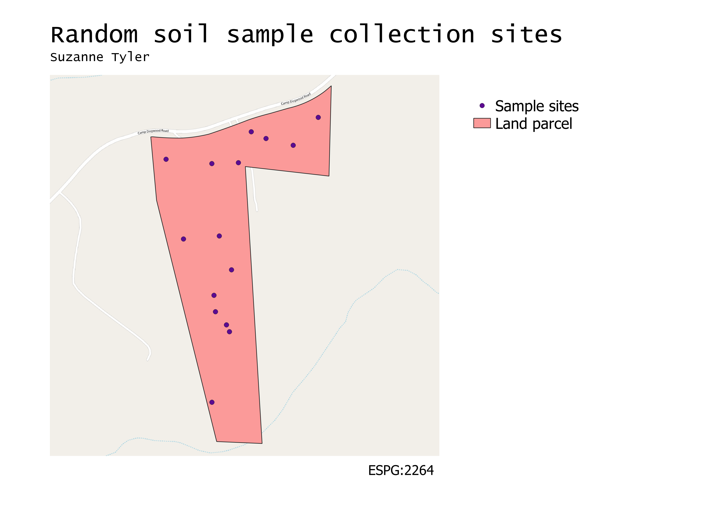

Vector Spatial Analysis
GEOG 370-006 // Suzanne Tyler // Homework 8
Research question: Where should I collect random soil samples?
To create this map, I first downloaded land parcel data for North Carolina. I queried the data to select the parcels I wanted (family property) and dissolved them into a single layer. I then plotted 15 random points on the parcel. I used OpenStreetMap to give the parcel some local context.
Map:

Sources
North Carolina parcel data